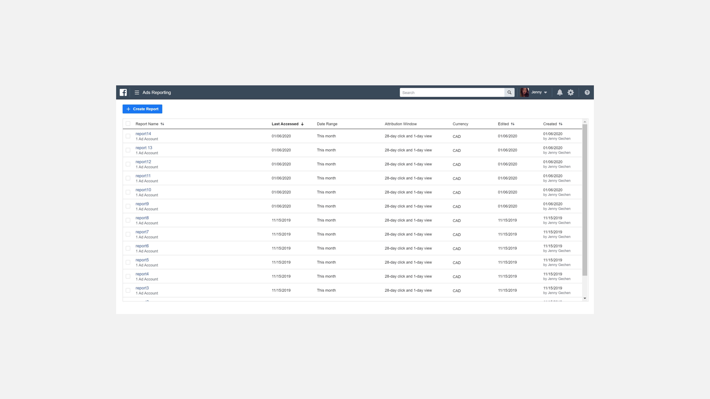

I was a Product Design intern at Facebook from September to November 2019. For 12 weeks, I worked on Ads Reporting, a tool that provides advertisers with a detailed summary of their ad performance. Advertisers could assess campaigns, ad sets, and ads and make adjustments accordingly.
A brief disclaimer - I can only talk about 1 of the 3 projects I worked on due to legal restrictions.
Depicted above is what the Ads Reporting tool looked like before I began working on it. Previous designers have done a great job at balancing information density by creating a simple, but detailed interface. The picture shows a list of reports that various ad accounts have created. Ad accounts refer to the individuals or groups that overlook the marketing operations on each Facebook page.
The popularity of social media advertising poses new challenges for Facebook - within the Ads Reporting tool, increased usage in report creation which makes it difficult to narrow down the scope of reports. Imagine you’re managing Samsung's marketing and you need a multitude of reports to measure performance across different continents. In the above image, looking for a keyword in an extensive list of reports can make the task feel like looking for a needle in a haystack.
I knew I wasn’t the first designer to encounter this problem, so I collaborated with other designers to see how they landed on a solution. All of them advised that I leverage a component from the FDS - the Facebook Design System. Facebook uses different design systems to build web and mobile products, they’re unified to reduce inconsistencies across the experience. After consulting my tech lead, we weighed the pros and cons and ruled out a few options due to technical limitations. That left us with one realistic option - the tokenizer component. The tokenizer component provides the desired functionality and exists throughout the ads experience, reducing the user's learning curve.
Following Precedents
In the spirit of building consistent experiences - I looked at how the tokenizer was being used in other business tools. In Ads Manager, users could type into the search field and easily select a suggested search based on a popular query (in this case, campaign, ad set, or ad name).
Other tools offered inclusive and exclusive filtering. The additional operators provide powerful ways to narrow the results list.
Since I was still learning about the problem space, I leaned heavily on my cross functional partners to come up with a list of traits that we could offer from a technical standpoint. I vetted the list with my PM and assessed the priority and necessity of each trait. This is what we came up with in the end.
The Final Product
I aligned the search experience by providing suggested queries, enabling users to quickly find what they’re looking for.
Filter works in a similar fashion - pick a trait, and specify whether you’re looking for results that contain or don’t contain a keyword.
Parting Thoughts
Feel free to check this out for yourself, it exists on the Ads Reporting tool today. Overall I am super happy with this project! I’m really stoked that I got to ship something before the end of my internship and to see the end to end design process. I’m super thankful to have the chance to collaborate with incredibly talented people who were always incredibly generous with their time.